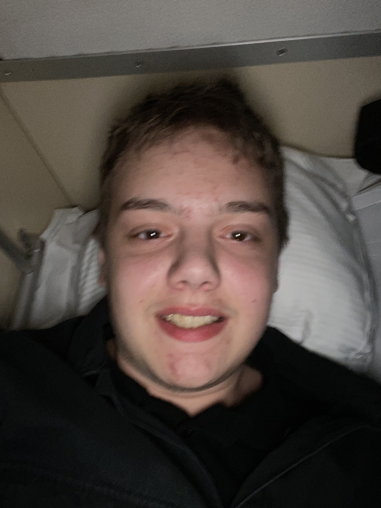

Hej, jag är Isaac
Jag heter Isaac Wesslau och är 19 år gammal.
Jag väger idag över 150 kg och lever med det som jag kallar super-super-fetma. Det är ett tillstånd som påverkar nästan allt i min vardag – hur jag rör mig, hur folk ser på mig, hur mycket energi jag har, hur samhället behandlar mig. Det är tungt, både fysiskt och mentalt, och det har varit så i många år.
Men min kropp är bara en del av historien. Jag har överlevt saker som ingen människa borde behöva gå igenom. Från ung ålder blev jag utsatt för våldtäkt och sexuella övergrepp. Jag har också växt upp med en alkoholistisk far som misshandlade mig – både fysiskt och psykiskt – under stora delar av min uppväxt. De där åren lämnade ärr som fortfarande gör ont, och som jag bär med mig varje dag.
Ändå är jag här. Jag andas. Jag existerar. Jag vågar visa upp mig precis som jag är – med alla mina kilo, mina trauman, min regnbåge och min trans-pride. Jag har lärt mig att överlevnad inte alltid ser ut som i filmerna. Ibland ser den ut som att man tar en dag i taget, att man vågar skriva sin egen historia, att man säger "jag finns" trots allt.
Den här sidan är min. Ingen annans. Här får jag vara stor, sårbar, arg, stolt, regnbågsfärgad och trans på samma gång. Om du läser det här – tack för att du stannade en stund. Välkommen till min värld.